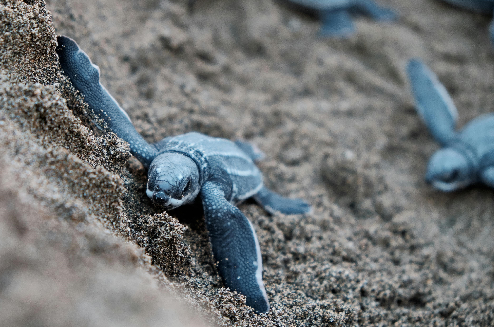
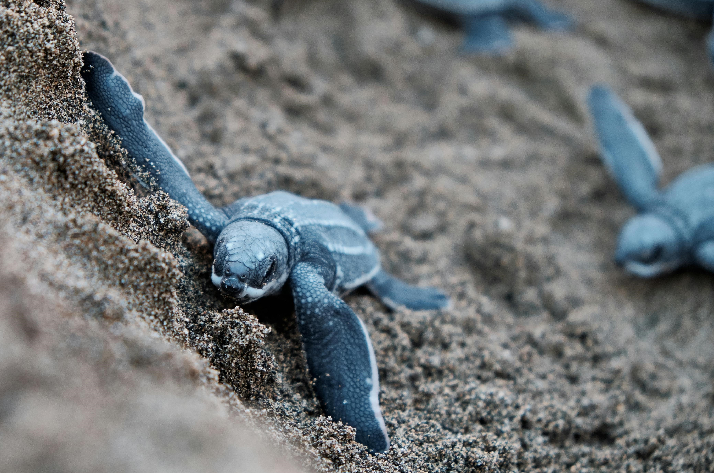

Las tortugas marinas son grandes reptiles1 con pulmones que habitan los mares tropicales y subtropicales a lo largo del mundo. Sus conchas se componen de una parte superior llamada caparazón y una parte inferior conocida como plastrón. Unas escamas duras llamadas escudos cubren su caparazón y piel. El número de estos escudos y su disposición nos ayudan a determinar las diferentes especies.
La caza y recolección de huevos para su consumo son las causas principales de la drástica reducción en las poblaciones de todo el mundo. Los huevos de tortugas se consideran un afrodisíaco3 en algunos países y se comen crudos o se venden como bocadillos en bares y restaurantes.
-Pesca incidental.
Cada año, miles de tortugas se ven atrapadas a causa de las operaciones camaroneras. Las tortugas marinas si no pueden llegar hasta la superficie para respirar, se ahogan. Las pesquerías que utilizan palangres y redes de enmalle también son de las mayores causas de mortalidad entre las tortugas.Todos los años hay tortugas quedan atrapadas en las plumas de arrastre, en los anzuelos de los palangres y en las redes de pesca.
-Comercio ilegal.
La fuerte demanda y los altos precios del mercado de los caparazones de las tortugas marinas especialmente los de las tortugas carey y los productos fabricados con el cuero de las tortugas baulas amenazan a las poblaciones de estas especies vulnerables.
-Cambio climático.
El clima cambiante y el calentamiento global pueden causar un impacto severo en las poblaciones de tortugas.La determinación del sexo de las tortugas marinas depende de la temperatura.Un cambio en las temperaturas globales altera la temperatura de la arena, lo cual afecta el sexo de las crías e incrementa el riesgo de una inestabilidad en la composición de las poblaciones.
-Contaminacion de los mares.
Las tortugas marinas pueden confundir los objetos de material plástico que flotan en el mar con alimento, como las medusas, y se asfixian cuando tratan de comerlos. Se enredan con los aparejos4 de pesca que se han desechado, se ahogan, no pueden alimentarse o nadar. La basura en las playas puede atrapar a las crías recién eclosionadas5 y evitar que lleguen al mar. Los derrames de petróleo pueden envenenar a las tortugas de todas las edades.
"Es inmensamente triste ver como la naturaleza nos está hablando y los humanos no escuchamos."
1 Dicho de un animal: Del grupo de los vertebrados, ovíparo u ovovivíparo, de temperatura variable y respiración pulmonar que, por carecer de patas o por tenerlas muy cortas. 2 Acto por el que los animales ovíparos incuban los huevos para mantenerlos calientes y así se puedan desarrollar los embriones. 3 Cualquier alimento que se consuma con el declarado propósito de despertar o aumentar el deseo sexual. 4 Conjunto de elementos o útiles empleados para la pesca, como anzuelos conjunto de elementos o útiles empleados. 5 Hecho de nacer o brotar de un ser vivo luego de romper la envoltura que lo contenía.
 
